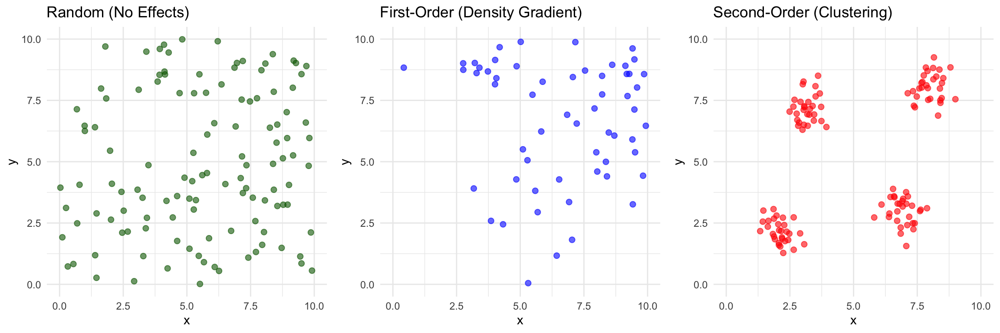
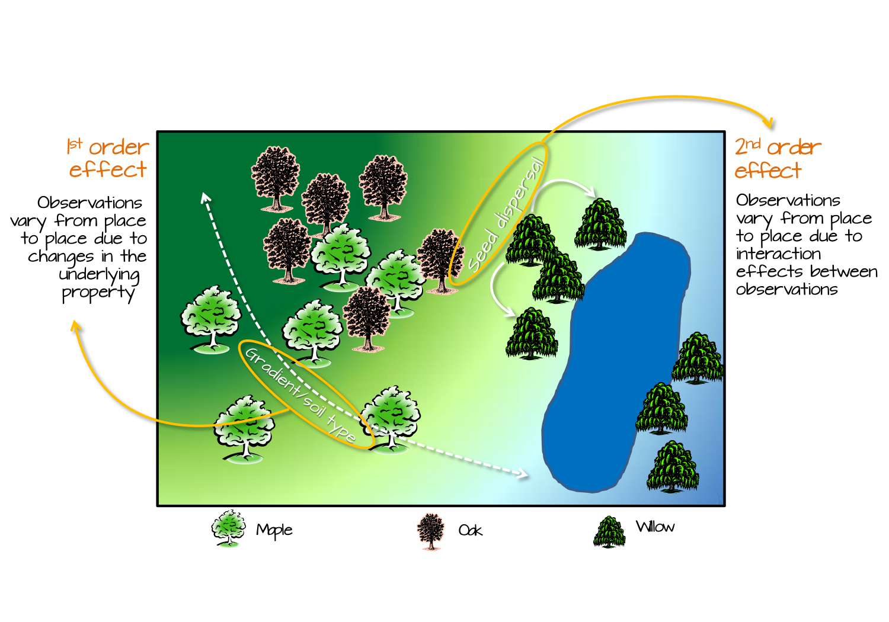

Exploratory Spatial Data Analysis
Patterns Vs Processes
Sep 22, 2026
Module Overview
Overview
- Introduction to Exploratory Spatial Data Analysis (ESDA)
- Patterns vs Processes
- First-order vs. Second-order Effects
- Point Pattern Analysis
- Nearest Neighbor Analysis
What is Exploratory Spatial Data Analysis?

What is Exploratory Spatial Data Analysis?
| Core Concepts | Key Questions |
|---|---|
| Exploratory: Initial investigation of spatial data | Is there spatial pattern? |
| Visual: Maps, plots, graphs | Where are the patterns? |
| Statistical: Quantitative measures | Are patterns clustered or dispersed? |
| Hypothesis-generating: Not confirmatory | Are patterns random or systematic? |
Important
ESDA reveals structure before formal modeling
Patterns vs. Processes
Pattern
- What we observe
- The spatial arrangement
- Descriptive
- Examples:
- Clustered disease cases
- Dispersed fire stations
- Random plant distribution
Process
- Why it exists
- The generating mechanism
- Explanatory
- Examples:
- Disease transmission
- Planning optimization
- Seed dispersal mechanisms
Patterns vs. Processes
Critical Distinction
Multiple processes can produce similar patterns!
Same process can produce different patterns!
Note
We analyze patterns to infer processes
Different underlying mechanisms can create similar-looking spatial arrangements
Pattern-Process Examples
Urban Crime Distribution
Observed Pattern: Crime clustered in certain neighborhoods
Possible Processes:
- Social disorganization (community characteristics)
- Routine activity theory (opportunity structures)
- Broken windows (environmental cues)
- Repeat victimization (contagion effects)
Note
Same pattern, different theoretical explanations!
Need theory + statistical analysis + domain knowledge
Processes: First-Order vs. Second-Order Effects

First & Second Order Effects
First-Order Effects (Intensity/Density)
- Definition: Variation in the average number of events across space
- What it captures: Spatial trend, large-scale variation
- Example: More disease cases in densely populated areas
Second-Order Effects (Dependence/Interaction)
- Definition: Correlation between events at different locations
- What it captures: Local clustering, spatial dependence
- Example: Disease cases clustered due to contagion (beyond population density)
First-Order vs. Second-Order Effects
First-Order Effects (Intensity/Density)
Second-Order Effects (Dependence/Interaction)
Why This Matters
Different analysis methods target different effects!
Understanding this helps you choose the right tool.
First-Order Effects in Detail
Characteristics
- Large-scale spatial trends
- “Density surface” varies across study area
- Related to environmental/contextual factors
Examples
- Population density → disease incidence
- Elevation → vegetation types
- Distance from CBD → housing prices
Second-Order Effects in Detail
Characteristics
- Spatial dependence: “Everything is related, but nearby things more so” (Tobler’s Law)
- Local clustering beyond overall density
- Point-to-point interactions
Examples
- Contagious disease spread (beyond density)
- Tree competition effects
- Social influence on voting patterns
Why the Distinction Matters
Interpretation Challenge
A clustered pattern could result from:
- First-order effects only: Varying density due to environmental factors
- Second-order effects only: Uniform density but local interactions
- Both: Density variation AND clustering within high-density areas
Why the Distinction Matters

Point Pattern Analysis
What Are Point Patterns?
Definition: Spatial arrangement of discrete events/objects represented as points
Characteristics: - Location: \((x, y)\) coordinates - Marked: May have attributes (size, type, time) - Study area: Defined region of interest
Examples
- Disease cases (lat/lon of residences)
- Tree locations in a forest
- Crime incidents
- Fire/emergency service facilities
Goals of Point Pattern Analysis
Primary Objectives
- Describe the spatial arrangement
- Is it clustered, dispersed, or random?
- Quantify the degree of clustering/dispersion
- How clustered/dispersed?
- Test against theoretical distributions
- Is the pattern significantly different from random?
- Infer underlying processes
- What mechanism generated this pattern?
Complete Spatial Randomness (CSR)

Nearest Neighbor Analysis (NNA)
Concept
Measures the spacing between points
- For each point, find distance to its nearest neighbor
- Calculate mean nearest neighbor distance (\(\overline{NND}\))
- Compare to expected distance under CSR
Nearest Neighbor Analysis (NNA)
Learning Check
In nearest neighbor analysis, what does an R value of 0, 1, and 2.149 represent? Briefly explain what an R value below 1 versus above 1 suggests about a point pattern
Explain one important way that nearest neighbor analysis and quadrat analysis differ in how they characterize a point pattern. In your answer, identify the main statistic used in each approach.
NNA: The Mathematics
Observed Mean Nearest Neighbor Distance
\[\overline{NND} = \frac{\sum NND}{n}\]
where \(n\) = number of points
Expected Distance Under CSR
\[\overline{NND}_E = \frac{1}{2\sqrt{Density}} = \frac{1}{2\sqrt{n/A}}\]
where:
- \(n\) = number of points
- \(A\) = area of study region
- Density = \(n/A\) (points per unit area)
NNA: R-Statistic
Standardized Nearest Neighbor Index
\[R = \frac{\overline{NND}}{\overline{NND}_E}\]
Interpretation
| R Value | Pattern Type | Interpretation |
|---|---|---|
| \(R = 0\) | Maximum clustering | All points at same location |
| \(0 < R < 1\) | Clustered | Points closer than random |
| \(R = 1\) | Random (CSR) | Points follow CSR |
| \(R > 1\) | Dispersed | Points farther apart than random |
| \(R = 2.149\) | Maximum dispersion | Perfect hexagonal spacing |
NNA: Statistical Significance
Decision Rule
- If p-value < 0.05, reject CSR, and if
- R > 1: significantly dispersed
- R < 1: significantly clustered
- If p-value >= 0.05, you cannot reject CSR even if R is not 0.
NNA: Worked Example from Reading
Toronto Community Services (Police, Fire, Elementary Schools, Voting)
| Facility | n | Density | \(\overline{NND}\) | \(\overline{NND}_E\) | R | Z | p-value |
|---|---|---|---|---|---|---|---|
| Police | 20 | 0.0312 | 2.08 | 2.83 | 1.28 | 2.42 | 0.0153 |
| Fire | 20 | 0.0312 | 2.08 | 2.83 | 1.28 | 2.42 | 0.0153 |
| Schools | 20 | 0.7308 | 0.59 | - | 0.84 | -12.23 | 0.0000 |
| Voting | 20 | 24.4351 | 0.27 | - | 0.84 | - | 0.0153 |
Interpretations
- Police & Fire: Dispersed (planned spacing)
- Schools: Clustered (population density)
- Voting: Highly clustered
Nearest Neighbor Analysis (NNA)
Key Advantage
- Simple to calculate and interpret
- Sensitive to second-order clustering/dispersion
Limitation
- Reduces all spatial information to a single number
- Sensitive to boundary effects
- Only uses nearest neighbor (ignores other distances)
When to Use NNA
Appropriate Situations ✓
- Relatively homogeneous study area
- Interest in overall spacing pattern
- Quick exploratory analysis
- Second-order effects (clustering)
Less Appropriate ✗
- Strong first-order effects (use quadrat)
- Multiple scales of clustering
- Need to identify cluster locations
- Very irregular boundaries
Tip
Best Practice: Use NNA in combination with other methods (e.g., quadrat analysis, visual inspection)
Summary
Key Concepts Covered
- ESDA Framework
- Exploratory approach to spatial data
- Patterns vs. Processes
- Observable vs. generative mechanisms
- First vs. Second-Order Effects
- Density variation vs. spatial dependence
- Point Pattern Analysis Introduction
- Complete Spatial Randomness (CSR)
- Nearest Neighbor Analysis
- Measurement, interpretation, significance testing
Before Next Class
Required Reading
- Review Lembo reading
- Focus on examples and interpretation
Think About
- What spatial patterns exist in your research area?
- Are they first-order or second-order effects?
- What processes might generate these patterns?
Next Lecture
- Quadrat Analysis, K function
- Comparing approaches
- Practical lab
#6 Exploratory Spatial Analysis